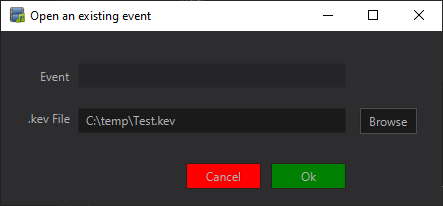

Working with Events
jKaraoke uses the concept of "Events" to manage sessions. An Event allows you to save your current singer queue and application state to a file, which can be reloaded later.
Creating a New Event
When you start a new karaoke session, it is best practice to create a new event immediately.
- Go to File > New Event.
- Enter a unique name for your event (e.g., "BirthdayParty_Jan2026").
- Select a folder where the event file will be saved.
- Click OK.
This creates a .kev file that will store your session data.
Saving an Event
While jKaraoke may have auto-save features (configurable in Settings), you can manually save your progress at any time.
- Go to File > Save Event to write the current queue and active singer status to your event file.
Loading an Existing Event
To resume a previous session:
- Go to File > Open Event.
- Navigate to the location of your saved
.kevfile. - Select the file and click Open.
The application will restore the queue exactly as it was when you last saved.

Note: Loading an event relies on the media files (songs) remaining in the same location on your computer. if you move or rename your MP3/CDG files, jKaraoke may not be able to play them when the event is reloaded.